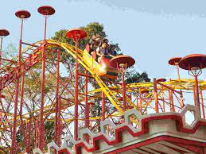

Parque Mutirama de Goiânia
O Parque Mutirama foi inaugurado no final da década de 60, em 1969, pelo então prefeito na época Iris Rezende Machado. Localizado ao lado do Parque Botafogo, o Mutirama está em uma área criada e planejada desde a fundação de Goiânia, no Centro da capital. Em suas instalações, consta o planetário que pertence à Universidade Federal de Goiás e o Parque dos Dinossauros, contendo réplicas em tamanho real. O parque, que completou 52 anos em 24 de outubro de 2021, além de fazer parte da história e infância de várias pessoas, contempla 21 atrações em funcionamento e é aberto ao público de todas as idades. Com espaço para atender até 10 mil pessoas diariamente o Parque Mutirama recebe a população com entrada gratuita.
Veja os melhores brinquetos do Parque Mutirama: Brinquedos